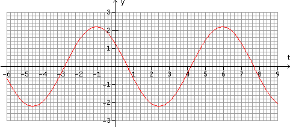
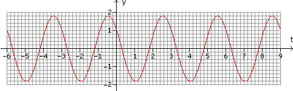
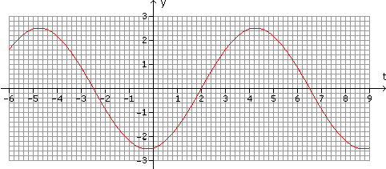

Funktionskurven - Aufgaben 4
Lies die Funktionsgleichungen für folgende sinusförmigen Wechselgrößen ab:
1.

2.

3.

4.
Schreibe von Amplituden-Phasen-Form in Kosinus-Sinus-Form um:
a) y(t) = 4,32sin(ωt+127°)
b) y(t) = 17,38sin(ωt–0,925)
5.
Schreibe von Kosinus-Sinus-Form in Amplituden-Phasen-Form um:
a) y(t) = 2,93cosωt + 11,75sinωt
b) y(t) = –7,62cosωt – 1,62sinωt
Ergebnisse:
1. 2,2sin(0,9t+2,5)
2. 1,8sin(2,1t+2,5)
3. 2,5sin(0,7t–1,4)
4. a) y(t) = 3,45cosωt – 2,60sinωt
b) y(t) = –13,88cosωt + 10,46sinωt
5. a) 12,11sin(ωt+0,244)
b) 7,79sin(ωt–1,780)